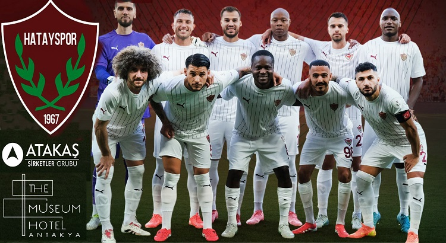

Gururumuz: Hatayspor
Bordo-Beyazlı sevdamızın tarihi ve detayları.
Takım Bilgileri
- Kuruluş Yılı: 1967
- Renkleri: Bordo ve Beyaz
- Stadyum: Yeni Hatay Stadyumu
- Kapasite: 25.000 Kişi
- Lakap: Güneyin Yıldızı

Yakın Dönem Lig İstatistikleri
Aşağıdaki tabloda takımımızın 2019'dan günümüze uzanan performans özetini inceleyebilirsiniz.
| Sezon | Lig | Pozisyon | Önemli Gelişme |
|---|---|---|---|
| 2019 - 2020 | TFF 1. Lig | 1. (Şampiyon) | Tarihinde İlk Kez Süper Lig'e Yükseliş |
| 2020 - 2021 | Süper Lig | 6. | Süper Lig'deki İlk Sezonda Üstün Başarı |
| 2021 - 2022 | Süper Lig | 12. | Orta Sıralarda İstikrarlı Sezon |
| 2022 - 2023 | Süper Lig | - | 6 Şubat Depremi Nedeniyle Ligden Çekilme |
| 2023 - 2024 | Süper Lig | 15. | Zorlu Sezonda Ligde Kalma Başarısı |
| 2024 - 2025 | Süper Lig | 10. | İstikrarlı Performans ile Orta Sıralar |
| 2025 - 2026 | Süper Lig | Devam Ediyor | Üst Sıralar İçin Kıyasıya Mücadele |
Son Dönem Önemli Maç Sonuçları
2026 bahar döneminde takımımızın aldığı son maç skorları:
| Tarih | Ev Sahibi | Skor | Deplasman | Turnuva |
|---|---|---|---|---|
| 12 Nisan 2026 | Hatayspor | 2 - 1 | Konyaspor | Süper Lig |
| 05 Nisan 2026 | Antalyaspor | 1 - 1 | Hatayspor | Süper Lig |
| 28 Mart 2026 | Hatayspor | 0 - 2 | Galatasaray | Süper Lig |
| 15 Mart 2026 | Kasımpaşa | 1 - 3 | Hatayspor | Süper Lig |